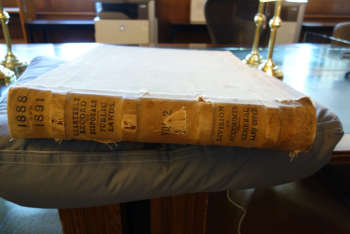

Daten
Historikerinnen und Historiker bekommen oft ein Leuchten in den Augen, wenn sie von der Arbeit im Archiv
sprechen – mir geht es nicht anders.
Wissenschaftliche Fortschritte entstehen jedoch nicht nur durch
das Durchforsten staubiger Akten, sondern ebenso durch die sorgfältige Edition und Digitalisierung von
Quellen. Historische Forschung baut stets auf der Arbeit vieler Archivarinnen, Archivare und Kolleginnen
und Kollegen auf. Der Austausch von Erkenntnissen und Materialien ist daher ein zentraler Bestandteil
unseres Berufs.
In diesem Bereich stelle ich Forschungsdaten zur Verfügung, die für andere
Wissenschaftlerinnen und Wissenschaftler von besonderem Interesse sein könnten.

Im Rahmen eines Projekts über Homestead-Siedler habe ich Statistiken der Bilanzabteilung des US General
Land Office zu allen land claims transkribiert, die zwischen den Geschäftsjahren 1863 und 1912 auf
lokaler Ebene gestellt wurden. Die bisher veröffentlichten Statistiken (in den Jahresberichten des GLO)
endeten früher – und Zusammenstellungen waren nur auf Bundesstaatsebene für die ersten zwanzig Jahre der
Geltungsdauer des Gesetzes verfügbar.
Die hier bereitgestellte Tabelle ist die umfangreichste
verfügbare Homesteading-Statistik – und sie wird in Zukunft noch weiter ergänzt werden, um auch die
späteren Jahre abzudecken. Aktuelle Informationen finden Sie hier und in meinen Veröffentlichungen!